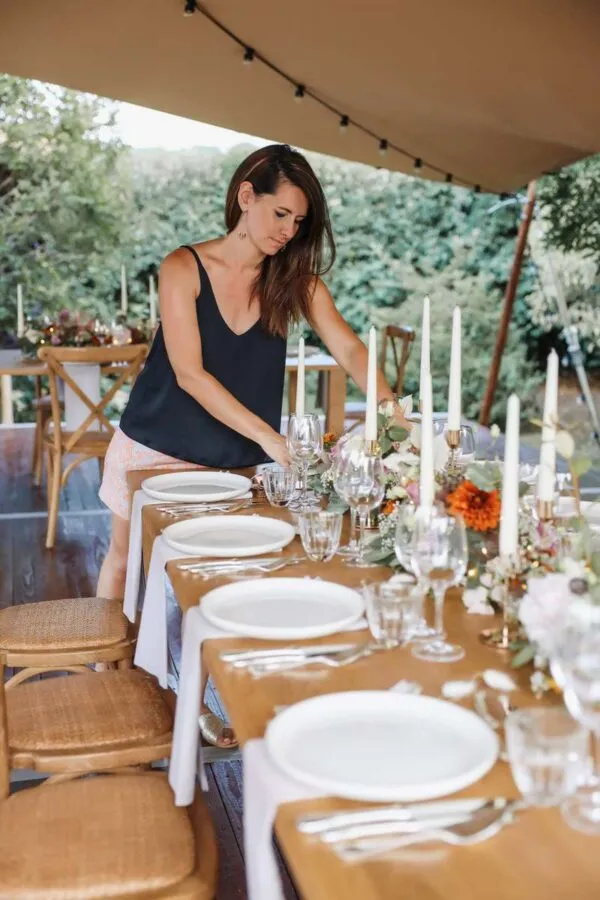
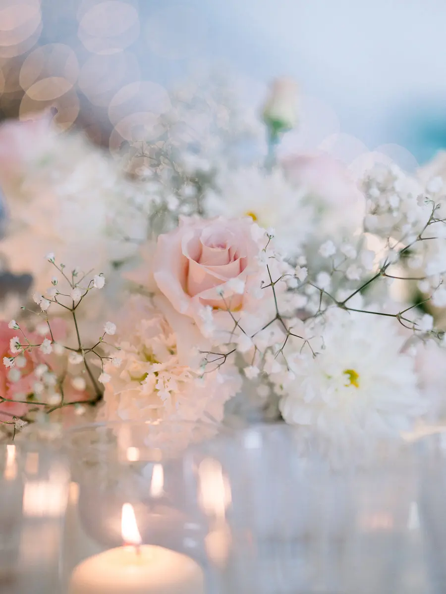
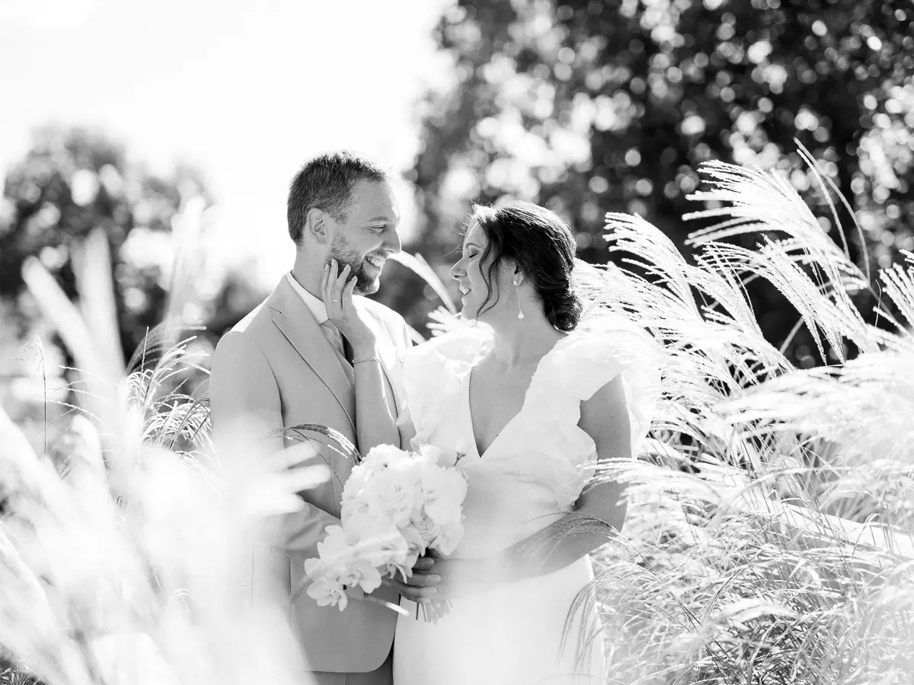

Wedding Planner
& Designer
Organisation de mariages sur mesure, haut de gamme et authentiques, à Bordeaux et sur le Bassin d'Arcachon.

Des valeurs humaines avant tout
Créée par Alexandra en 2014 à Bordeaux, Lovely Day Event est une agence évènementielle française spécialisée dans la décoration et l'organisation de mariages sur mesure, haut de gamme et authentiques dans la région bordelaise et le Bassin d'Arcachon.
Pour gérer, parfaire et coordonner votre mariage à votre image, je mets tout en œuvre pour rendre cet évènement unique d'une vie simple, rigoureux et soigné dans les moindres détails.
Ma plus grande force de wedding planner, ce sont les valeurs humaines que je place avant toute chose. Pour moi, organiser un mariage sur mesure, c'est savoir écouter, répondre à vos besoins et surtout s'adapter à votre histoire de couple.
Quels sont les moments importants du mariage pour vous ?
Racontez-moi votre rencontre, vos envies, vos idées : je vous promets d'être force de proposition et toujours passionnée pour vous accompagner dans un si grand projet.
Wedding planner : bien plus qu'un carnet d'adresses
Un mariage, ce sont des centaines de décisions, une vingtaine de prestataires et une seule journée pour que tout soit juste. Mon métier, c'est de porter tout cela pour vous, du premier rendez-vous jusqu'au dernier slow.
Écouter & imaginer
Comprendre votre histoire, vos envies et votre budget, puis traduire tout cela en un projet clair, cohérent et à votre image.
Choisir & négocier
Sélectionner les bons prestataires, comparer les devis, négocier et sécuriser chaque contrat. Vous gagnez du temps, de l'argent et de la tranquillité.
Concevoir & créer
Imaginer la scénographie, chiner, fabriquer et installer le décor : c'est ma signature de Wedding Designer certifiée.
Orchestrer le jour J
Être la cheffe d'orchestre sur le terrain : timing, prestataires, imprévus. Vous, vous profitez de chaque instant.

Saviez-vous qu'on m'appelle « créatrice de mariages » ?
Véritable passionnée de l'organisation de mariage et entière dans tout ce que j'entreprends, je mets un point d'honneur à offrir aux futurs mariés les détails et conseils qui feront de leurs préparatifs un moment unique et serein.
Je ne pourrais vous proposer de si beaux moments sans des prestataires de qualité en qui j'ai confiance, et qui correspondent à votre personnalité. Mon agence travaille avec de nombreux partenaires dans la région de Bordeaux, alliant prestations de qualité et respect du budget de mes clients.

© Tristan PerrierWedding Designer certifiée
Formée aux méthodes de travail de la Wedding Academy, en véritable experte du mariage, je gère pour vous toutes les facettes de votre projet en gardant une belle cohérence et harmonie.
Mon atout, c'est ma créativité. J'aime la décoration, les dernières tendances, les ambiances que créent les matières et les couleurs. Je vous propose de manière cadrée et structurée une scénographie complète, afin que vous puissiez vous projeter dans votre jour.

© Tristan PerrierSimplicité, sérénité
et efficacité
« Un mariage heureux est une longue conversation qui semble toujours trop brève. » Je fais en sorte que le vôtre ne soit que souvenirs et bonheur.
Vous placer au centre de votre mariage
Ne gardez que le meilleur de votre mariage. C'est un événement très important dans une vie : il me semble essentiel que les mariés rayonnent et puissent avoir confiance le jour J. Des rires, des larmes, de l'amour et surtout beaucoup d'émotions. Quelle chance de vous accompagner tout au long de votre projet !